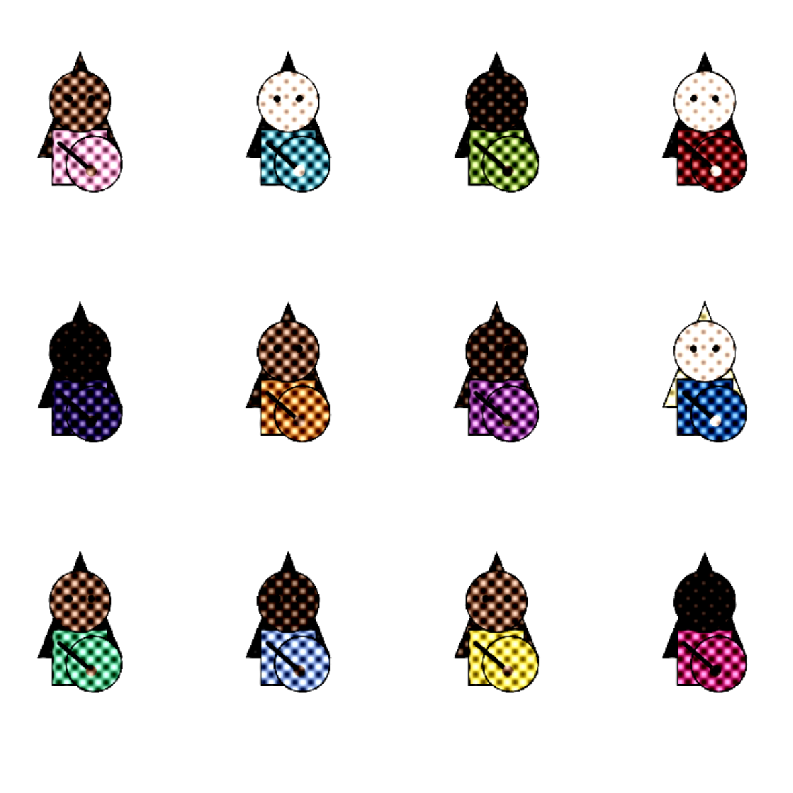
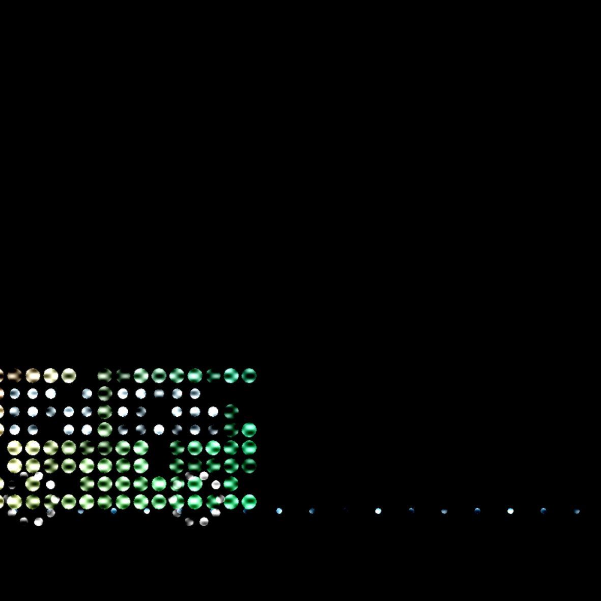
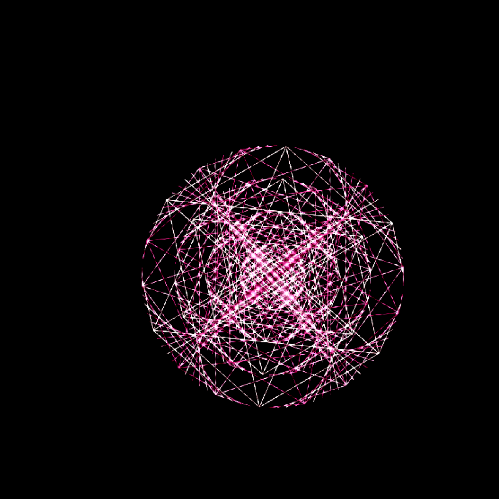
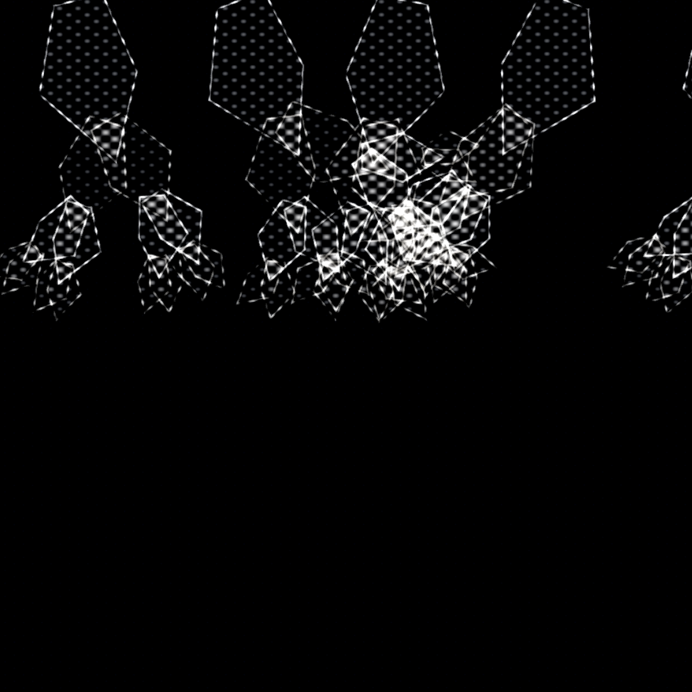
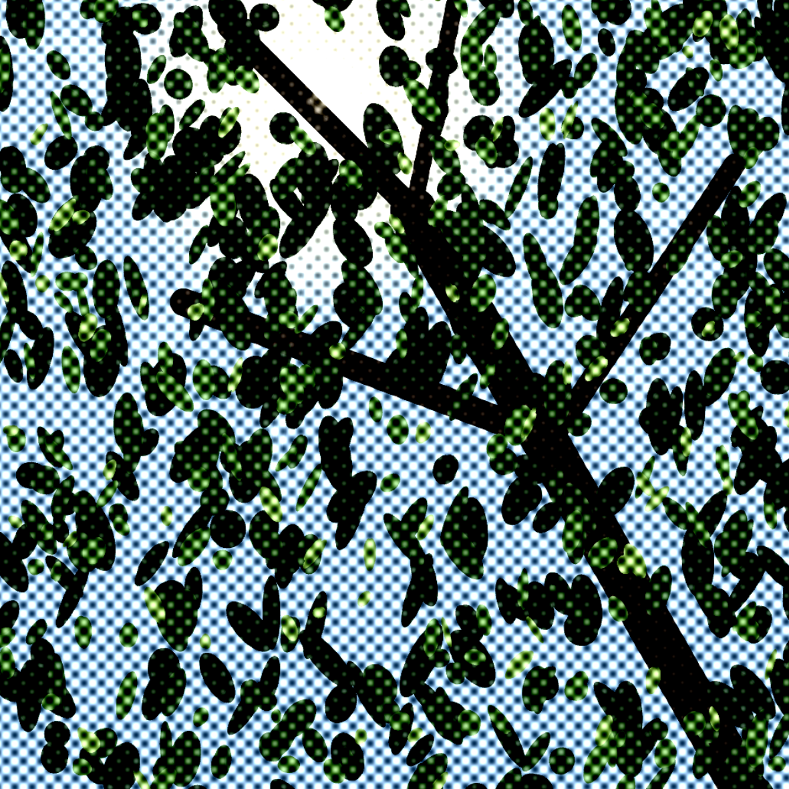

1: Certified lover boy
Exploración de formas generativas y ritmo visual desarrollado en p5.js.
Abrir simulación p5.js →Portafolio 2026
Proyectos creativos en base a códigos en p5.js. Escuela de Arquitectura y diseño, PUCV, 2026.
Explorar ProyectosEn esta asignatura exploro el arte generativo, el creative coding y el desarrollo web como medios de expresión visual e interactiva. Trabajo con p5.js, HTML y CSS para crear experiencias digitales basadas en reglas, comportamientos y relaciones.
Entiendo el código como material de diseño y como una forma de escritura visual: primero conceptualizo y formulo una lógica, y luego la traduzco en prototipos que refino de manera iterativa. Uso la inteligencia artificial como apoyo para explorar alternativas y depurar, sin reemplazar mis decisiones formales, y me apropio del código leyéndolo, explicándolo y modificándolo.
El resultado es un sitio web donde organizo, documento y publico mis exploraciones.

Exploración de formas generativas y ritmo visual desarrollado en p5.js.
Abrir simulación p5.js →
Iteraciones de movimiento y captura de interacción con librerías p5.js.
Abrir simulación p5.js →
Mecánica interactiva y física simple programada en entorno web.
Abrir simulación p5.js →
Estructuras repetitivas y trama de código generativo en movimiento.
Abrir simulación p5.js →
Manipulación del color, opacidades y luminiscencia vectorial. Trabajo final en duplas.
Abrir simulación p5.js →Me interesa el diseño de interacción y de experiencia de usuario, con un enfoque centrado en las personas. Entiendo el diseño como una herramienta para identificar y responder a necesidades concretas, buscando que cada solución sea clara, accesible y significativa para quien la utiliza.